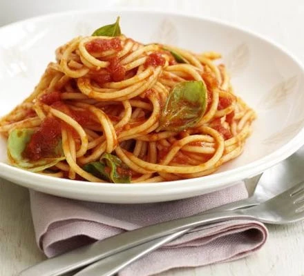

Tomato & basil sauce recipe

Tomato & basil sauce served with spaghetti
Save time and money with this simple and tasty sauce, great with
pasta, meat or fish
Ingredients
- 1 tbsp olive oil
- 1 garlic clove, crushed
- 400g can chopped tomatoes
- 1 tsp vegetable stock powder or ½ crumbled stock cube
- 1 tbsp tomato purée
- few basil leaves
Steps
-
Heat the olive oil in a pan, add the garlic clove, then gently fry for 1
min.
-
Tip in the chopped tomatoes, vegetable stock powder, tomato purée and
sugar, then bring to the boil. Reduce the heat, then simmer uncovered
for 5 mins, stirring occasionally.
- To finish, tear a few basil leaves, then stir into the sauce.